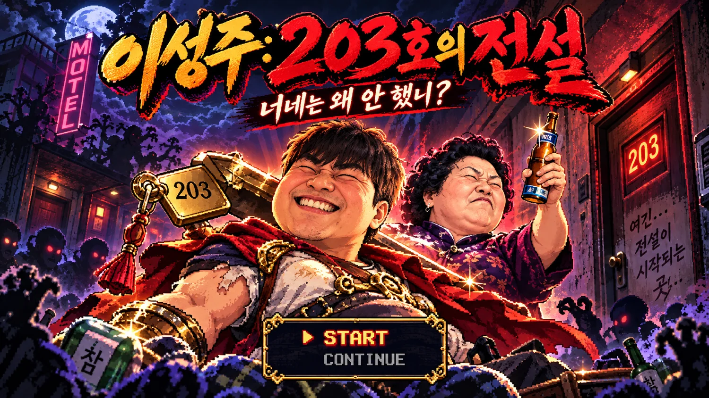

HORROR COMEDY · PIXEL RPG
이성주
203호의 전설
너네는 왜 안 했니?
PLAYABLE WEB RPG
/
VERSION 1.2 · MOBILE
▶
게임 시작
⌨️ 방향키 / WASD 이동
✦ E / SPACE 조사
📱 화면 터치 이동 / 방향 버튼
♫ 배경음악 켜짐
음량
15%
♪ 효과음 켜짐
◆
203호의 전설
THE LEGEND OF ROOM 203
♫ BGM ON
음량
15%
♪ ON
↻ 재시작
CHAPTER 01
낡은 여관 앞
●
여관 입구로 다가가 조사하세요.
이 게임은 HTML Canvas를 지원하는 브라우저가 필요합니다.
E
조사하기
친구
…
계속하기
▼
맵을 돌아다니며 E로 조사하세요.
X: 540 · Y: 352
👆 게임 화면 터치 = 자동 이동·조사
·
화살표 꾹 누르기 = 이동
▲
◀
▼
▶
E
조사 / 대사